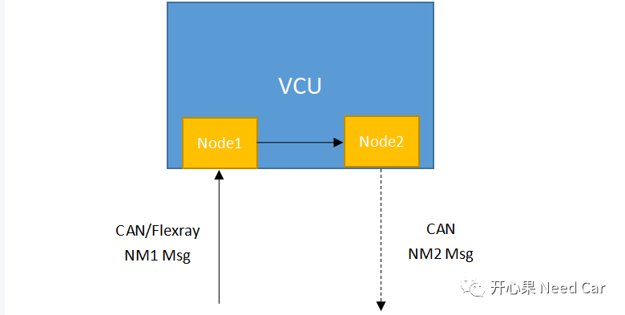
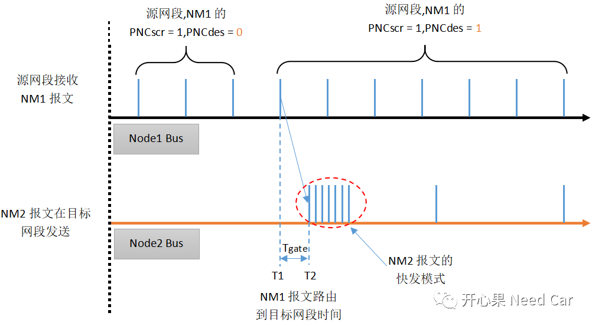
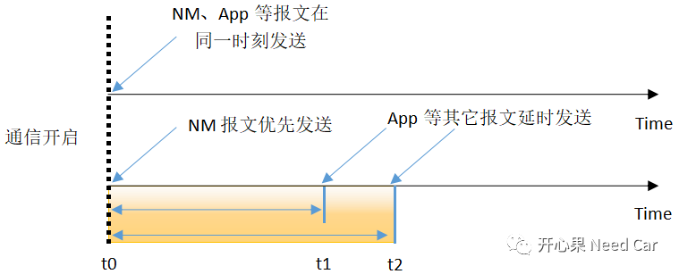
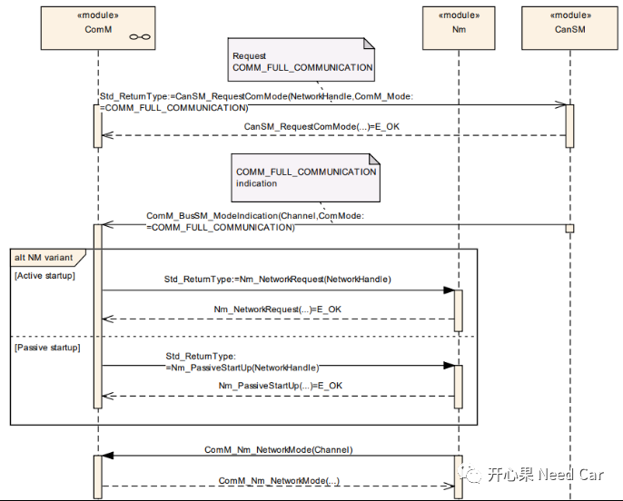

开心果 Need Car · 2022-01-18T20:22:00+08:00 · 微信原文
项目包含Autosar网络管理时，一般会要求Node外发的第一帧是网络管理报文，目的是为快速唤醒网络；同时也会充分考虑通信栈的任务周期和时序，因为网络状态切换与其密切相关，如果未考虑好这两点则可能带来潜在的Bug。本文从工程实际出发，分享一个实例：Node路由超时引发的Bug。
1
需求描述
如下图，Node1所在CAN/Flexray总线接收网络管理报文NM1，该网络管理报文在VCU内部转发给Node2（Node2连接CAN总线），如果收到的NM1包含Node2的PNCdes置位，则Node2网络唤醒，且Node2发送网络管理报文NM2。这里使用了PN的GateWay功能。
注意：Node1接收的NM1报文可以是不同的节点发来的网络管理报文，即测试时，接收到的NM1报文时间可以是随机的。

接收的NM1报文，第一次PNCsrc = 1、PNCdes = 1时，设置时间为T1，Node2外发第一帧NM2的时间设置为T2，需求规定T2-T1 ＜ 15ms，偏差10%，即(T2-T1)max < 15+15*10% = 16.5ms，T2-T1=Tgate。
NM1在Node1 Bus和NM2在Node2 Bus的具体行为如下所示：

实际测试结果：实际测试Tgate ＞ 16.5ms，不符合需求，Bug就这么来了。
2
Bug原因分析
问题点1：Node2发出的第一帧报文不是网络管理报文NM2，而是Node2的应用报文（周期性报文），由于NM2的优先级低于应用报文，导致NM2发送延迟。
具体分析1：如下图所示，如果NM、App等报文在通信开启的那一刻（t0）都请求驱动发送报文，比如：Can Controller，它只能根据优先级（CANID）决定报文发送顺序，因为NM报文相对App报文优先级低，所以NM报文会被延迟发送。
如果让每个周期性App报文，偏移（Offset）一段时间（t1、t2等）发送，而不是在t0时刻抢占NM报文，则可以让NM报文优先发送。


3
Bug修复策略
问题点1修复策略
CanNM模块修改配置
配置Retry Frist Message Request，确保Node2的NM2报文发送成功，即当前周期发送失败，下一周期继续尝试发送。
Com模块修改配置
Com模块中，配置所有周期性(PERIODIC)/混合(MIXED)应用报文偏移值（ComTxModeTimeOffset，默认值为0），避免高优先级的应用报文在通信开始时，抢占网络管理报文，确保网络管理报文被优先发送。
问题点2修复策略
往期精彩回顾